Pathology of Thyroid Nodules
- Three things make a thyroid nodule: hyperplasia (multinodular goitre, Graves), inflammation (Hashimoto), or neoplasm. Most are benign, and most patients are euthyroid.
- Follicular adenoma and follicular carcinoma are cytologically identical. The only difference is invasion — through the capsule, or into vessels. That is why FNA cannot separate them and why the diagnosis needs the whole excised nodule.
- Papillary thyroid carcinoma is the opposite: it is diagnosed on nuclear features alone, which FNA sees perfectly well. Commonest thyroid cancer (85–90%), spreads via lymphatics, often multifocal, 93% survival at 10 years.
- Follicular spreads by blood, papillary by lymph. One fact, two diseases, and it explains their staging and their surgery.
- Two cell types, two cancer families. Follicular cells give the differentiated cancers (papillary, follicular) that take up radioactive iodine. C cells give medullary carcinoma — makes calcitonin, ignores iodine, 25% syndromic (MEN 2A/2B, RET point mutation).
- Anaplastic carcinoma is a well-differentiated cancer that has lost its differentiation. Rapidly enlarging neck mass in an older patient, usually unresectable, no RAI response, often lethal.
Why the Pathology Report Matters
- Thyroid nodules are common — 0.1% annual incidence, 10% lifetime probability.
- They turn up because of structural symptoms, functional symptoms, or incidentally on imaging done for something else.
- The diagnostic pathway — clinical risk factors, ultrasound, FNA — exists to sort out who needs an operation.
- The surgical pathology report is what gives the definitive diagnosis. It supplies the elements that stage the cancer, set the prognosis, and decide whether anything more needs doing.
The patient this lecture is built around
History: 42-year-old woman, no risk factors, no family history. A lump in the neck present and slowly enlarging over 6 months, causing some difficulty swallowing. No symptoms of thyrotoxicosis.
Examination: a solitary, firm but not hard nodule, 2–3 cm, in the right lobe. No cervical adenopathy, no signs of thyrotoxicosis.
Biochemistry and imaging: TSH normal. Ultrasound confirms a solitary 3.2 cm nodule, TI-RADS 3.
FNA: satisfactory specimen; diagnosis of FLUS (follicular lesion of undetermined significance).
Decision: results, management options and risks discussed — she chooses a hemithyroidectomy. Everything below is what the pathologist does with what comes out.
The clinical evaluation that gets you to this point — TSH-first testing, when to scan, when to biopsy — is covered in 2.1 Clinical Presentation & Evaluation of Thyroid Dysfunction. This lecture picks up at the specimen.
Normal Thyroid: Two Cell Types
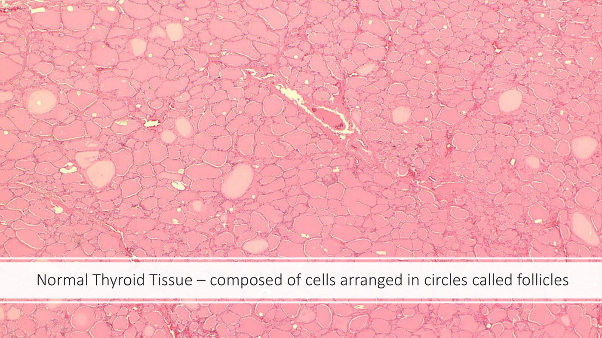
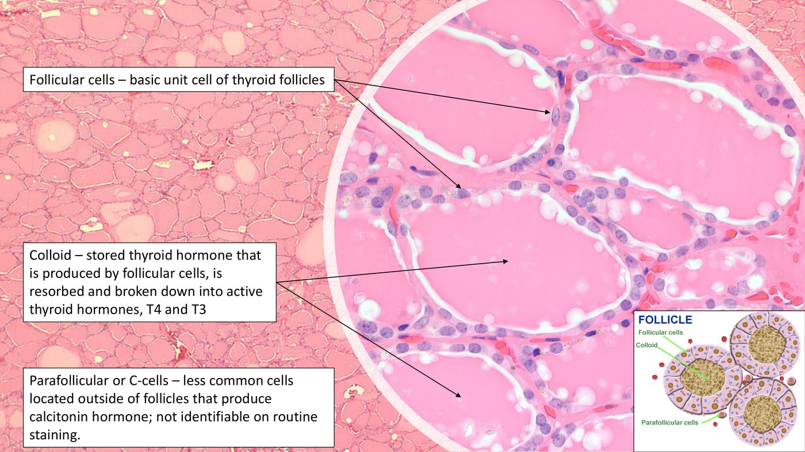
Both cell lines can become malignant, and which one a tumour came from determines almost everything that follows: whether it takes up radioactive iodine (follicular-derived does, C-cell-derived does not), which tumour marker follows it (thyroglobulin vs calcitonin), whether it is likely to be syndromic, and how aggressively it behaves.
Capillaries run between the follicles — which is why a tumour that invades vessels can seed the bloodstream directly, and why "angioinvasion" appears on every report.
What a Nodule Can Be
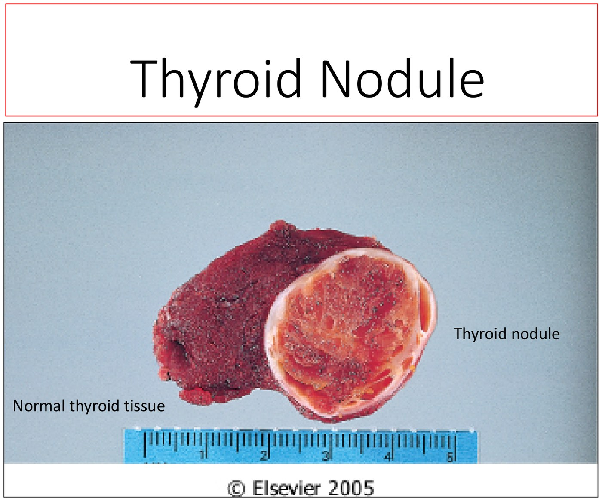
"Lump, bump, tumour, mass" — they all mean the same thing here, and most are benign. A nodule can be solitary or multiple, and the patient can be:
- Asymptomatic, or have structural symptoms — dysphagia, hoarseness, stridor — depending on what the nodule is pressing on.
- Euthyroid (the usual case), or thyrotoxic if the nodule is making hormone autonomously.
| Etiology | What it is | Examples |
|---|---|---|
| Hyperplasia | An increased number of cells | Nodular — multinodular goitre · Diffuse — Graves disease |
| Inflammation | Immune-mediated destruction and repair | Hashimoto thyroiditis |
| Neoplasm | A clonal proliferation — may arise in normal thyroid or against the background of either of the above | Benign — follicular adenoma · Malignant — the carcinomas below |
For each entity, the lecture works through the same six questions: prevalence, distinguishing clinical features, pathophysiology, key histological features, prognosis, and basic management. The histology is not decoration — it is how you understand the pathophysiology.
Hyperplasia: Multinodular Goitre and Graves
Multinodular hyperplasia / multinodular goitre
The most common cause of thyroid nodules. Prevalence 6–23% of women and 1.5–5% of men. Sporadic, or endemic in iodine-deficient regions — much less of a driver in North America than in much of the world.
- Nodules of varying sizes, composed of hyperplastic follicular cells with different levels of function — some more active, some less. The net result is that most patients are euthyroid, and there is no atypia.
- Degenerative changes are common and are much of what you see down the microscope: cystic change, haemorrhage, fibrosis, calcification.
- Consider surgery if it is symptomatic, if ultrasound or FNA show worrisome features, if it changes size over time, or if it is disfiguring.
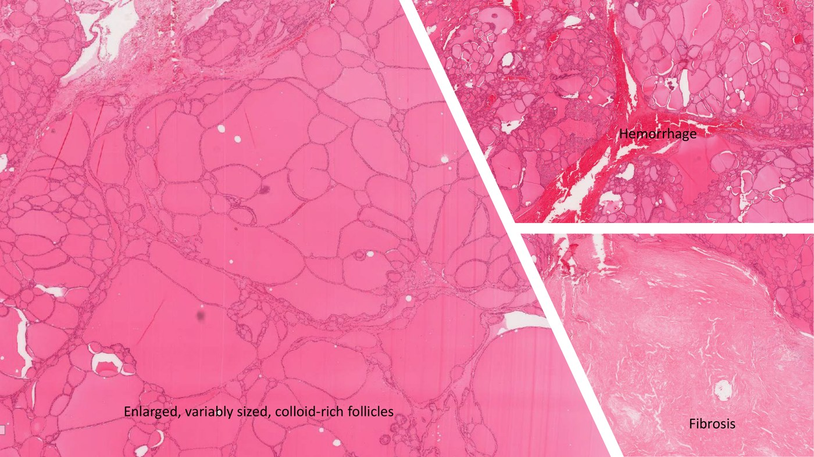
Graves disease (diffuse toxic hyperplasia)
A common cause of hyperthyroidism — 1% of the population, F:M 8:1. Autoimmune: antibodies bind TSH receptors, which are present on all thyroid follicular cells, stimulating both hormone production and cell proliferation. The result is a diffusely enlarged, hyperplastic, cellular gland with no atypia, with or without chronic inflammation.
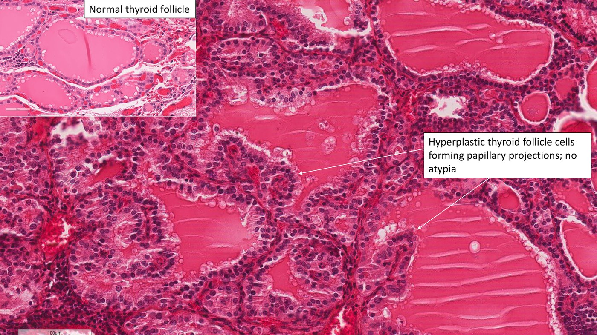
- Extrathyroidal manifestations: ophthalmopathy in 25–50%, pretibial myxedema in 0.5–4%.
- Management: control the thyrotoxic symptoms medically with adrenergic blockers, then antithyroid medication. Radioactive iodine or surgery if it cannot be controlled medically or there are compressive symptoms.
Inflammation: Hashimoto Thyroiditis
Also called chronic lymphocytic thyroiditis. A common cause of hypothyroidism — 1–2% of the population, F:M 4:1. Autoimmune-mediated inflammation and destruction of the gland.
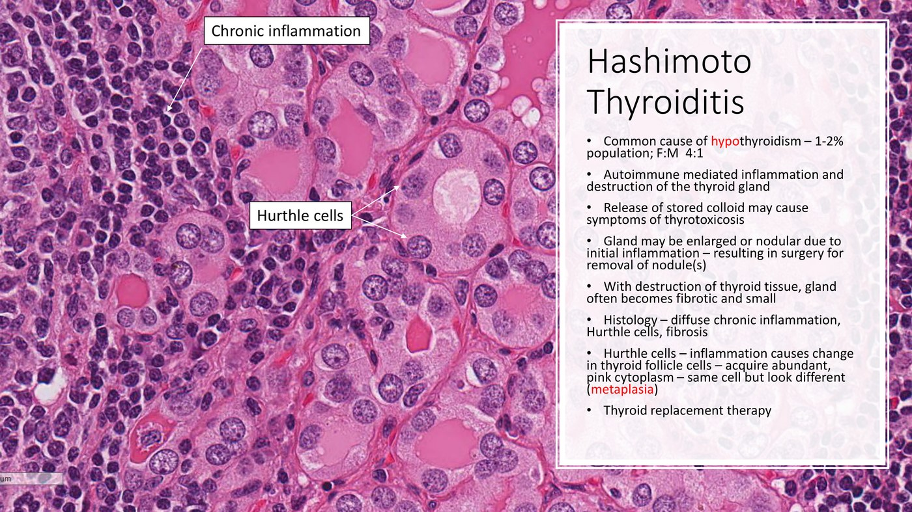
It can present as thyrotoxicosis. Destroying follicles releases the colloid stored inside them, so early on there may be a burst of preformed thyroid hormone and symptoms of thyrotoxicosis — before the gland fails. Same disease, opposite biochemistry, depending on when you catch it.
It can present as a nodule and get operated on. The gland may be enlarged or nodular from the initial inflammation, which is exactly how a Hashimoto specimen ends up on a pathologist's bench. Later, as tissue is destroyed, the gland becomes fibrotic and small.
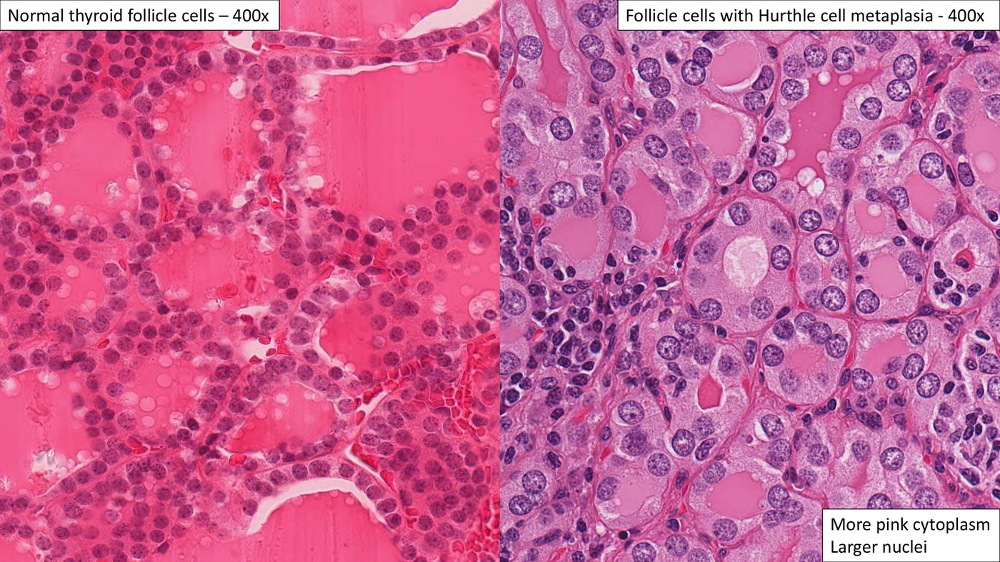
Management: thyroid replacement therapy. The clinical side is covered in 2.1.
Neoplasms: The Classification
The first question is primary or secondary — arising from cells in the thyroid, or a metastasis from elsewhere. This lecture is about the primary ones.
![Classification slide of thyroid gland neoplasms. Primary versus secondary. Follicular cell derived make up the great majority: benign follicular adenoma; malignant papillary thyroid carcinoma and variants 85 to 90 percent, follicular thyroid carcinoma 5 to 10 percent, poorly differentiated thyroid carcinoma under 5 percent, and anaplastic undifferentiated thyroid carcinoma under 5 percent. C-cell derived: medullary thyroid carcinoma 2 percent, malignant. Other neoplasms rarer, including lymphoma and soft tissue tumours. An arrow marks increasing aggressiveness and decreasing differentiation down the malignant follicular list.](../../../../assets/images/week-2/thyroid-nodule-pathology/neoplasm-classification.jpg)
| Cell of origin | Tumour | Share |
|---|---|---|
| Follicular cell | Follicular adenoma — benign | Incidence 3–5% |
| Papillary thyroid carcinoma (and variants) | 85–90% of thyroid cancers | |
| Follicular thyroid carcinoma | 5–10% | |
| Poorly differentiated thyroid carcinoma | < 5% | |
| Anaplastic (undifferentiated) carcinoma | < 5% | |
| C cell | Medullary thyroid carcinoma | 2% |
| Other | Lymphoma, soft tissue tumours | Rare |
Follicular Adenoma vs Follicular Carcinoma
Follicular adenoma — benign
- Incidence 3–5%; F:M 5:1, typically in the 40s–50s.
- Ultrasound: solid, well-circumscribed, homogeneous.
- Most are non-functioning — "cold" on radioactive iodine scanning; a minority are functioning ("hot").
- Cured by surgery — hemithyroidectomy, no recurrence.
- Frequent RAS mutations.
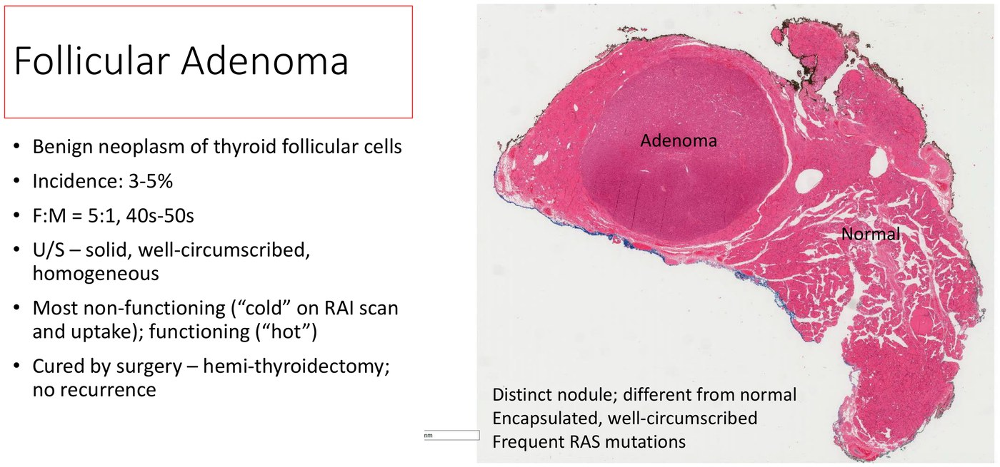
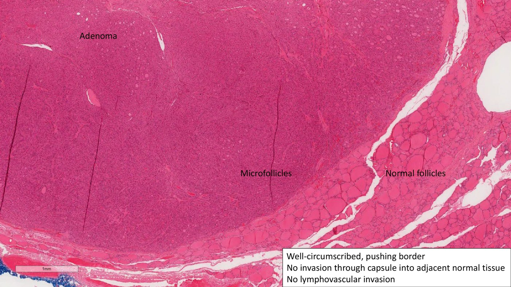
The border is the diagnosis. Well-circumscribed with a pushing border; no invasion through the capsule into adjacent normal tissue and no lymphovascular invasion. Microfollicles inside, normal follicles outside.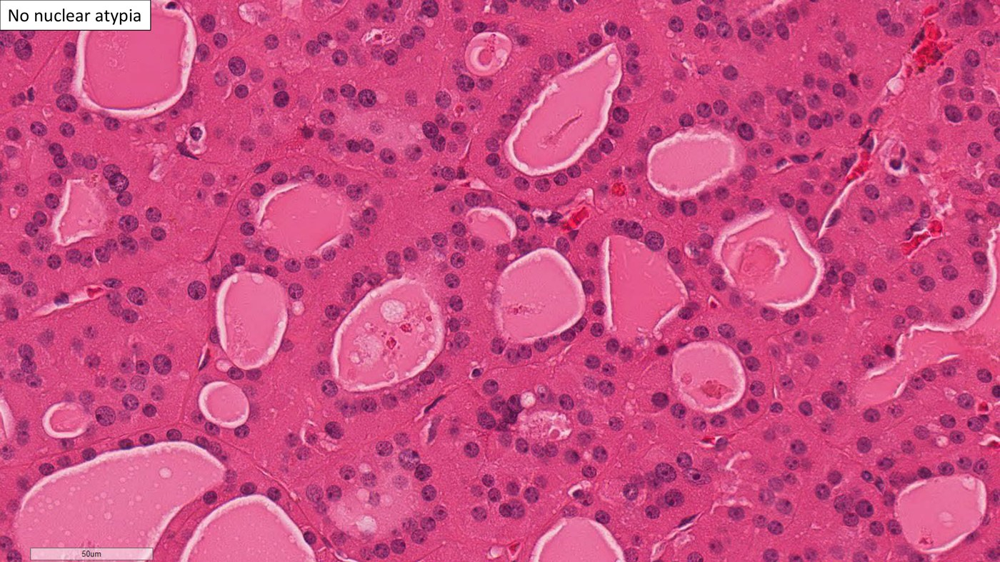
No nuclear atypia. Uniform, small, round nuclei — and this is exactly the problem, because the carcinoma looks the same.Follicular thyroid carcinoma — malignant
The lecture's own definition is the clearest one: like a follicular adenoma, but with invasion.
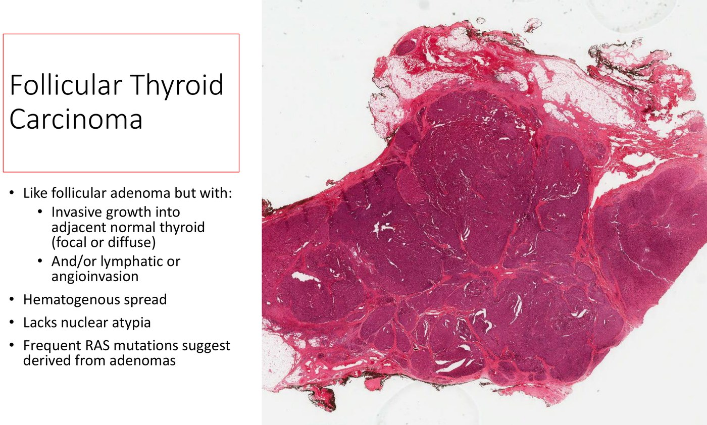
- Invasive growth into adjacent normal thyroid (focal or diffuse), and/or lymphatic or angioinvasion.
- Haematogenous spread — it seeds the bloodstream, so distant metastases (bone, lung) rather than neck nodes.
- Lacks nuclear atypia — the nuclei look benign.
- Frequent RAS mutations, the same as adenoma, which suggests these carcinomas are derived from adenomas.
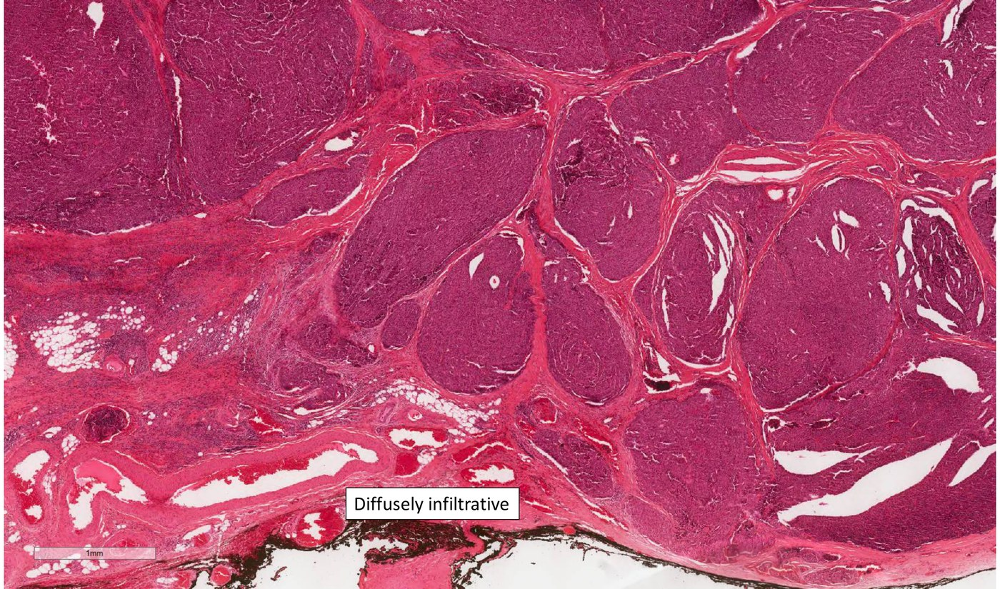
Diffusely infiltrative — tumour pushing out through the capsule into the thyroid around it.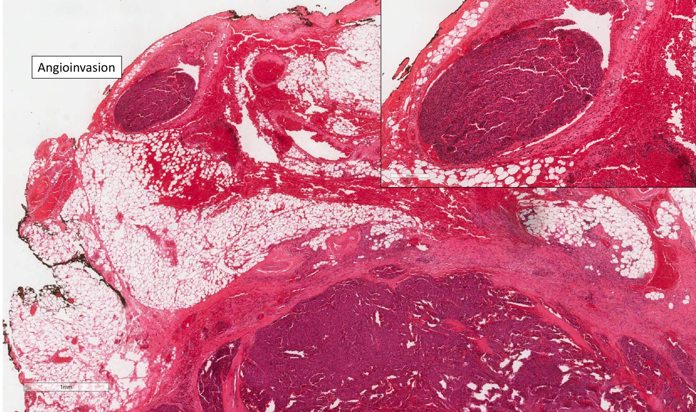
Angioinvasion — tumour inside a vessel lumen. This is the finding that makes it a carcinoma, and it is also the mechanism of its haematogenous spread.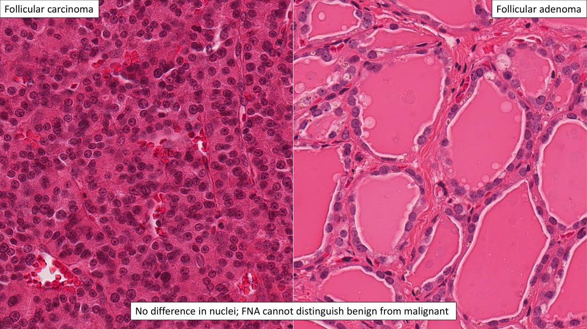
Adenoma and carcinoma are defined by architecture at the edge of the lesion, not by what the cells look like. A needle samples cells; it does not sample the capsule or the vessels around it. So a follicular lesion on FNA is an unresolvable result by design — it is not a failure of the aspirate or the cytopathologist.
That is exactly why the patient at the top of this page had a hemithyroidectomy for a "FLUS" result. The operation is diagnostic as well as therapeutic: only with the whole nodule and its capsule can anyone say which of the two it was.
Contrast this with papillary carcinoma below, which is defined by nuclear features — the one thing a needle is good at sampling.
Papillary Thyroid Carcinoma
The most common primary thyroid malignancy. F:M 3:1, typically 40–60 years.
- Most have a good prognosis — 93% survival at 10 years.
- Often multifocal.
- Often spreads via lymphatics to locoregional lymph nodes — and a neck node may be the initial presentation.
- Diagnosis is based on nuclear features. The classic type also has papillary architecture.
- Management: surgery, with or without radioactive iodine.
- Molecular: BRAF mutation, RET-PTC translocation.
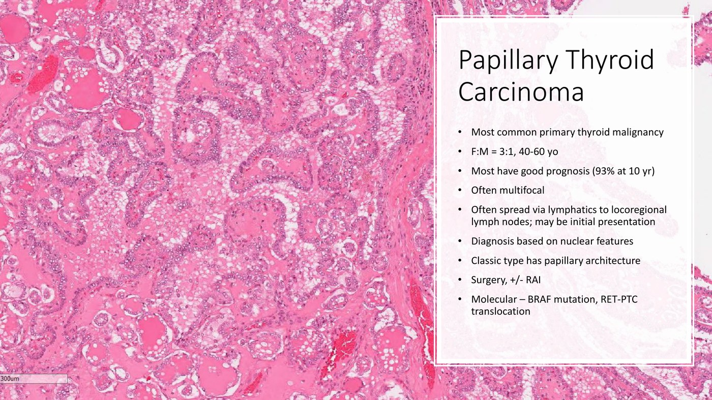
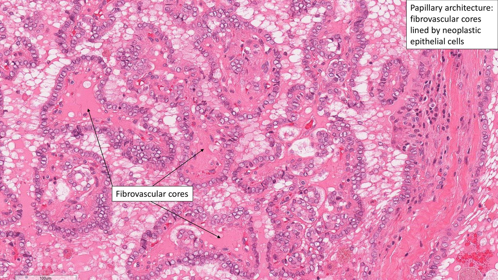
Papillary architecture — fibrovascular cores lined by neoplastic epithelial cells. Present in the classic type, but architecture alone is not what makes the diagnosis.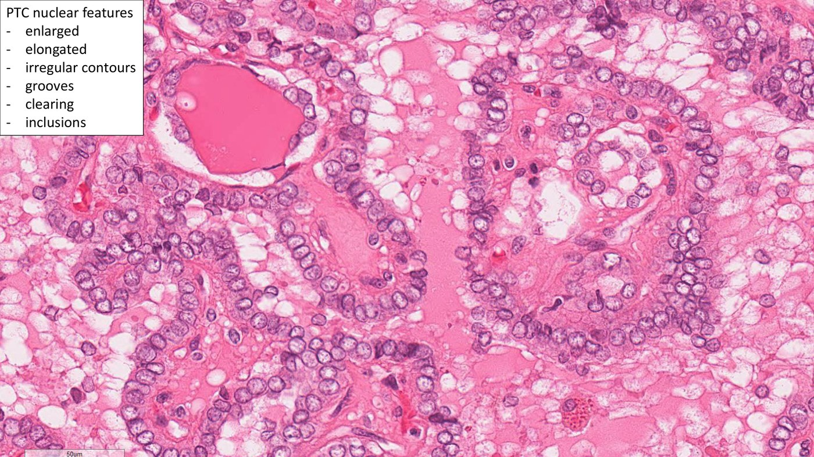
The nuclear features that do: enlarged, elongated, irregular contours, grooves, clearing, and intranuclear inclusions.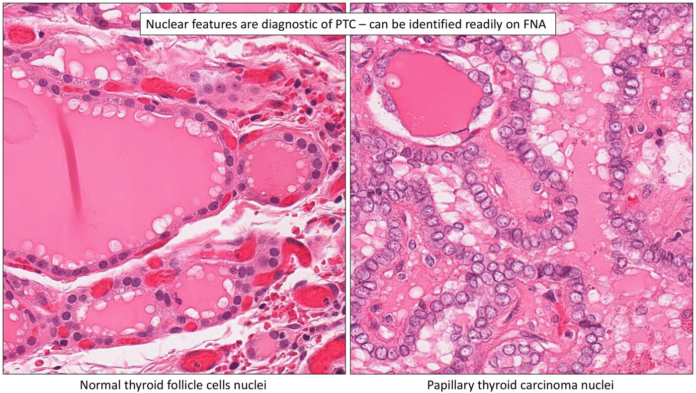
The Two Aggressive Ones
Anaplastic (undifferentiated) thyroid carcinoma
Very aggressive disease — often lethal. A rapidly expanding neck mass in an older patient. It arises as the progression of a well-differentiated thyroid carcinoma to an undifferentiated one — the same tumour, having lost its differentiation.
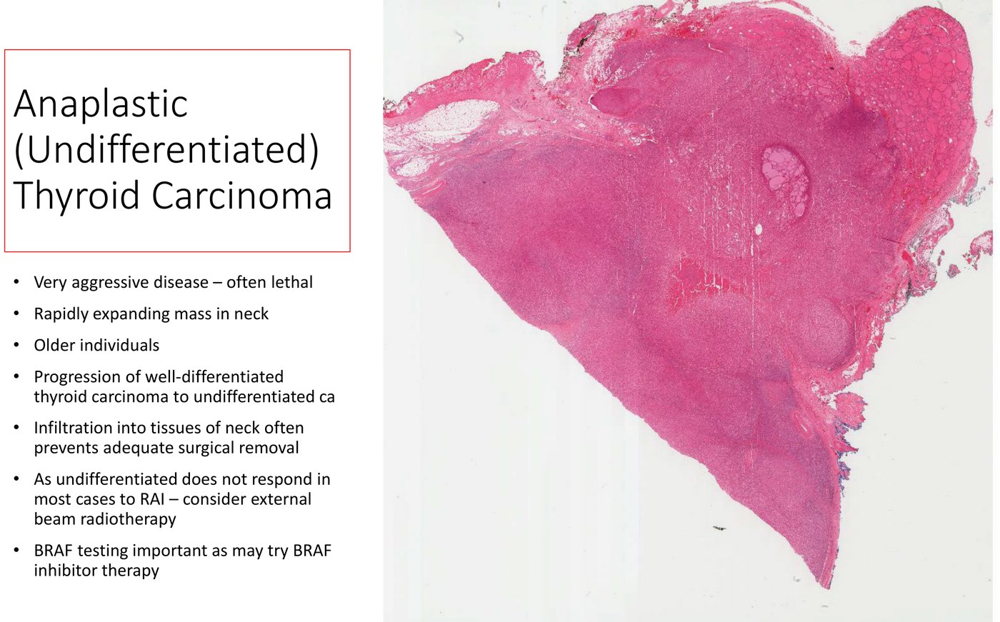
- Infiltration into the tissues of the neck often prevents adequate surgical removal.
- Being undifferentiated, it does not respond to radioactive iodine in most cases — consider external beam radiotherapy instead.
- BRAF testing is important, because a BRAF inhibitor may be an option.
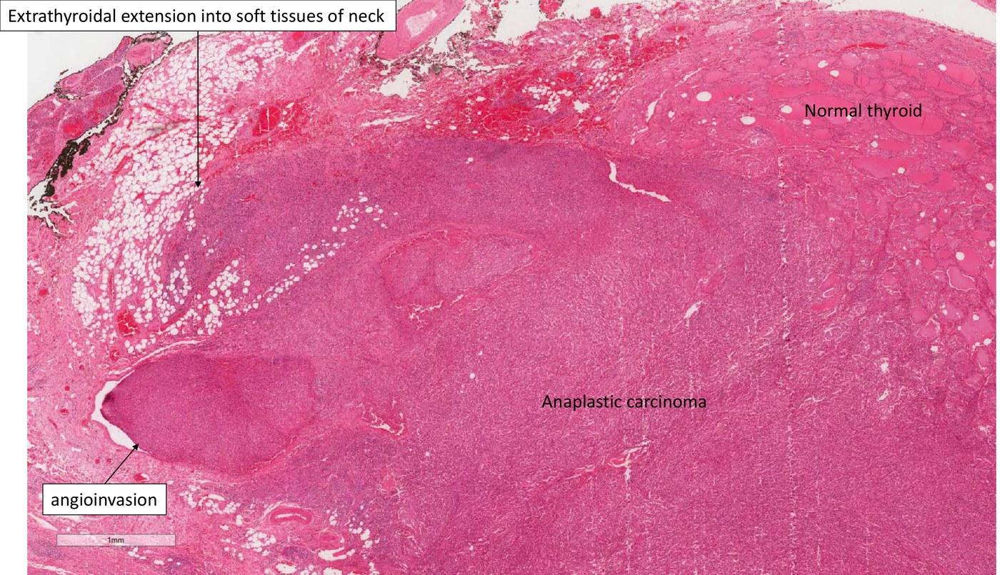
Extrathyroidal extension into the soft tissues of the neck, with angioinvasion. A rim of normal thyroid survives at the edge. This is why it is so often unresectable.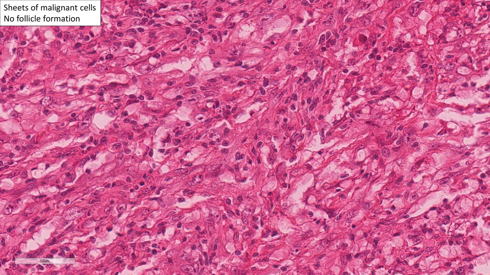
Sheets of malignant cells with no follicle formation. "Undifferentiated" is literal — nothing here looks like thyroid any more, which is precisely why it cannot concentrate iodine.Medullary thyroid carcinoma
The only one on this page that is not follicular in origin. It arises from the calcitonin-producing parafollicular (C) cells.
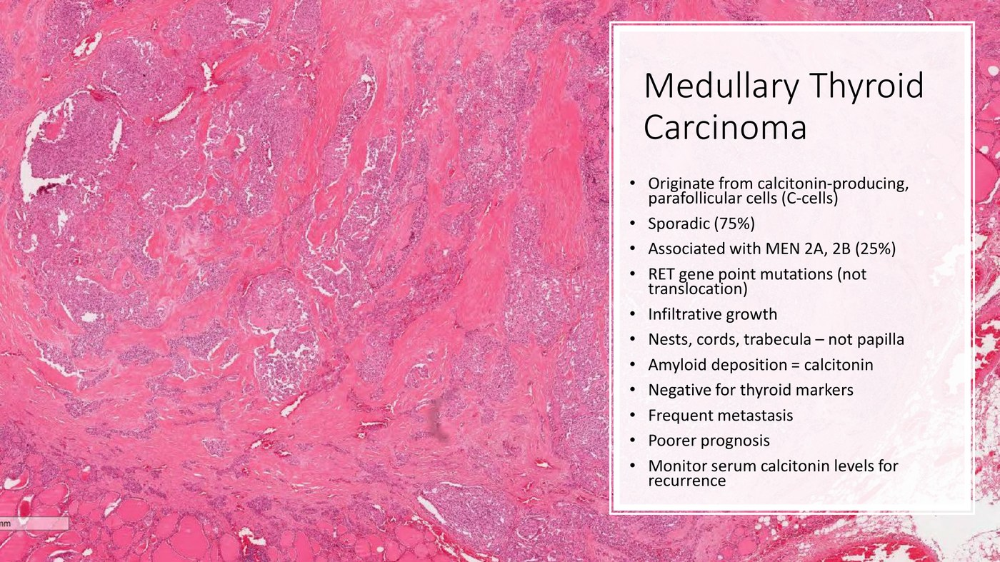
| Feature | Detail |
|---|---|
| Genetics | Sporadic in 75%; 25% associated with MEN 2A or 2B. RET gene point mutations — note, a point mutation, not the RET-PTC translocation of papillary carcinoma |
| Growth | Infiltrative; often multifocal. Nests, cords and trabeculae — not papillae |
| Signature finding | Amyloid deposition, which is polymerised calcitonin |
| Immunostaining | Negative for thyroid markers — it is not a thyroid follicular cell |
| Behaviour | Frequent metastasis; poorer prognosis than the differentiated cancers |
| Follow-up | Monitor serum calcitonin for recurrence — the tumour keeps making it, so it doubles as a tumour marker |
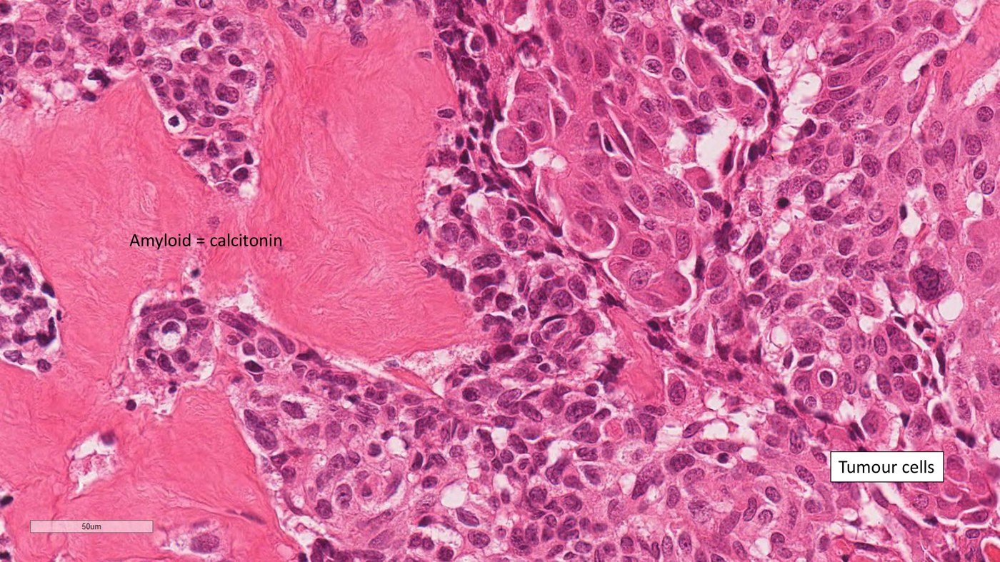
A quarter of these are syndromic, so a diagnosis of medullary carcinoma is a reason to think about the rest of MEN 2 — and specifically to exclude a pheochromocytoma before any operation, since an unrecognised one is exactly the scenario that causes an intraoperative hypertensive crisis. It also makes the family relevant: a RET point mutation identified early can be acted on with prophylactic surgery.
On prognosis: the deck says "poorer prognosis" without a number, and it is worth being precise, because MTC outcome is strongly stage-dependent rather than uniformly bad. American Thyroid Association figures for 10-year survival: stage I 100%, stage II 93%, stage III 71%, stage IV 21% — and by extent of disease, about 96% localised, 76% regional, 40% with distant metastases. A figure around 40–50% describes metastatic disease, not medullary carcinoma in general.
Management and What the Report Has to Say
General thyroid cancer treatment
- Surgery for established (FNA-positive) or suspected cancer > 1 cm. Hemithyroidectomy for low risk; total thyroidectomy for high risk.
- Lymph node dissection if there is evidence of nodal disease.
- Postoperative radioactive iodine (I-131) for well-differentiated carcinomas at high risk of recurrence — which is why differentiation matters so much on the report.
- External beam radiotherapy if there is extensive extrathyroidal extension.
- Chemotherapy and kinase inhibitors for some advanced cancers.
What goes in the report, and why each element is there
| Reporting element | What it determines |
|---|---|
| Tumour type · unifocal or multifocal · size of tumour(s) | Together these decide the need for additional surgery, for RAI therapy, for external beam radiotherapy and for chemotherapy — and they set the risk of local recurrence and the prognosis |
| Encapsulated vs non-encapsulated · capsular invasion (focal or extensive) | |
| Lymphatic invasion · angioinvasion | |
| Extrathyroidal extension | |
| Lymph node metastasis · size of largest metastasis · extranodal extension | |
| Margin status |
Every line is a decision, not a description. This is the point made at the very start of the lecture: the report is not a label on the specimen, it is the input to the next management step.
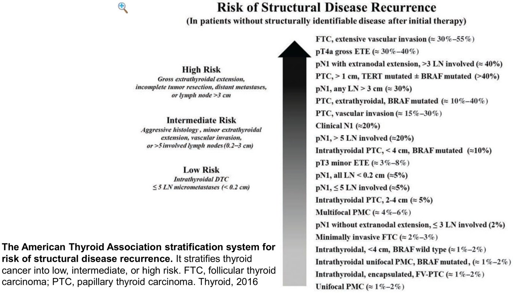
Staging, in one line
The AJCC/TNM 8th edition uses age 55 as the pivot for differentiated thyroid cancer: under 55, you can only be stage I or II — stage II requiring distant metastasis. Over 55, extrathyroidal extension and the structures involved drive the stage upward. 10-year disease-specific survival: stage I 98–100%, stage II 85–90%; and over 55, stage III 60–70%, stage IV < 50%.
A patient tells you her sister has just had a hemithyroidectomy and was diagnosed with papillary thyroid carcinoma. She asks what the prognosis is. The correct answer is that it is malignant and generally has a very good prognosis — and nothing more, because you do not have the details of the report.
The distractors are worth knowing individually. It is not benign — the benign neoplasm is the adenoma. It is not aggressive with a poor prognosis — that is anaplastic carcinoma; PTC generally behaves indolently. And you cannot condition the good prognosis on a completion thyroidectomy, lymph node dissection or radioactive iodine, because whether any of those is needed depends on the reporting elements in the table above — which you have not seen.
One-Page Summary
- Thyroid nodules are common, and due to hyperplasia, inflammation or neoplasia.
- Multinodular hyperplasia is due to different functional levels of thyroid follicular cells.
- Graves disease is a common cause of hyperthyroidism, secondary to stimulatory autoantibodies.
- Hashimoto thyroiditis is a common cause of hypothyroidism, secondary to destructive autoantibodies.
- Papillary thyroid carcinoma is the most common type of thyroid cancer.
- Most patients with well-differentiated thyroid cancers have a good prognosis.
- Anaplastic thyroid carcinoma is an uncommon but aggressive cancer resulting from transformation of a well-differentiated cancer to an undifferentiated one.
- Medullary thyroid carcinoma is derived from parafollicular cells and produces calcitonin.
- Pathological examination of thyroid nodules provides the definitive diagnosis and the critical elements that drive management.
Built from Dr. B. Wehrli's "Pathology of Thyroid Nodules" lecture slides. All micrographs, gross images and tables are taken from that deck. Two clarifications added from outside it, flagged where they appear: medullary thyroid carcinoma survival is given as stage-specific figures from the Revised American Thyroid Association Guidelines for the Management of Medullary Thyroid Carcinoma (Thyroid 2015) rather than the deck's unquantified "poorer prognosis"; and the note that a diagnosis of medullary carcinoma should prompt exclusion of a pheochromocytoma before surgery, which links to Week 3. The ATA recurrence-risk figure is from Thyroid, 2016, and the staging figures from the AJCC/TNM 8th edition table in the deck. Clinical evaluation of thyroid nodules and thyroid dysfunction is covered separately in 2.1.